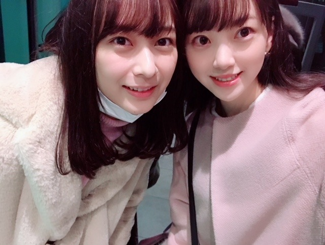
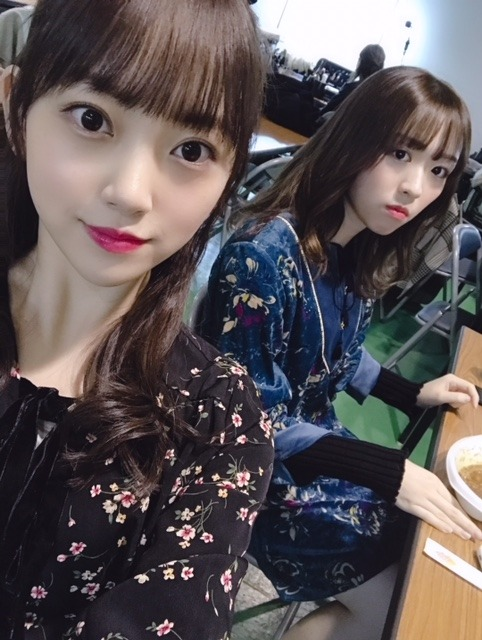
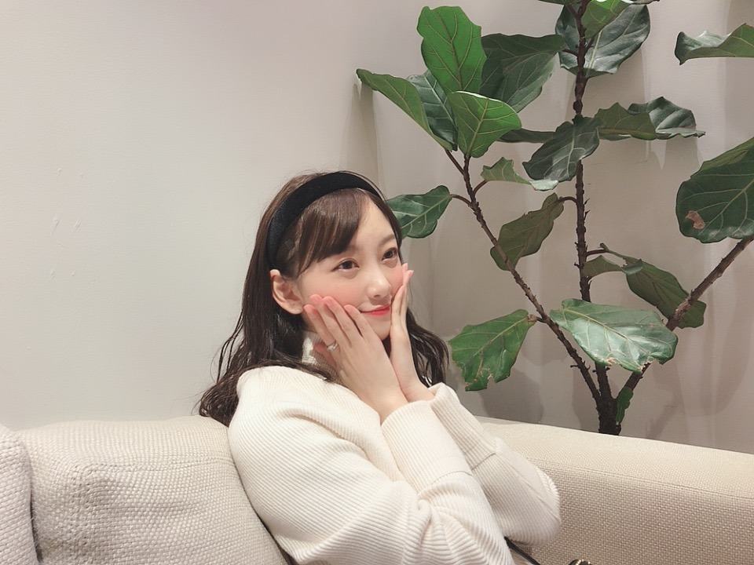

2019/0109Wedルージュと言うか紅と言うか
ちいさな目標
今年はコーヒーを飲めるようになりたいなぁ
コーヒー牛乳は好きだし
特に温泉上がりの！
コーヒーの香りも好きだから
あと一歩な感じがします...
朝に嗅ぐコーヒーの香りが大好きで
パンの香りもしたらもう最高☺︎
パン屋さんに行くと、ここで働いている人は毎日パンの香りに包まれて幸せな気持ちなのかなぁって考えます
その人がなぜその職についたのかっていう話を聞くのすごく好きなんですよね
だから会う人会う人に聞いちゃう
意外な理由もあればなるほど〜そんなきっかけ！と納得したり...
私がアイドルを目指すきっかけは何だったのか
実際乃木坂に入ってどう変わったか...
ちょうどですね、
1/11 金曜 18:30〜NHK岐阜にて
「まるっと！ぎふ」インタビューの様子が流れます☺︎！
そこで岐阜での話や映画の話、乃木坂の話などをさせていただきましたので興味のある方は是非、見てください！
お正月は、絢音と焼肉を食べてお買い物をしたり
蘭世と韓国料理を食べてお買い物してプリクラを撮ったり(若い)
友達と和食や火鍋を食べたりゆかとディズニー行って映画を観たり母とお買い物をしたり凄く充実していました

お仕事の合間やオフの日に
会いたいって言ってくれる
会いたいって思える素敵な友達に恵まれて幸せ者だなぁと新年早々感じました✨
大阪の握手会でも沢山の方が
寒い中会いに来てくださりました
ありがとうございます✨✨
関わる人、1人1人を大切にできる一年にしたいです！

カメラ向けると大抵真顔をするみり愛さん...
毎晩冷え込むので皆さん体調にはお気をつけて〜〜
今日23:45〜文化放送 レコメン！
今週の日曜は21時22時台に
らじらー！サンデーに出ます
聴いてくださいな、
寒い日はラジオに限る！
笑
あ！ちなみに今日の夜ご飯は、

お寿司なんだ〜〜♪♪
楽しみ！梅しそ巻きが好き！
わーい
では
2019/01/09 18:36


コメント(361)
未央奈さんも体調崩さないでくださいね！
ずっと応援してます
あと名前はまーさーんです覚えてくれると嬉しいです
うまか〜でした☻
レコメンもらじらーももちろん聴きますよー！
僕は今日唐揚げです。最高です！
コーヒーはまずは缶コーヒー(ジョージアエメマン)あたりから攻めたらどうでしょう？甘めで飲みやすいよ！
日曜の握手会お疲れさんでした！
おみくじリベンジまだって言うてたけど、またブログやモバメで結果教えてね～
本年もよろしくお願いします。
堀未央奈さんの活躍を期待してます。
頑張って下さい。
今年はストリート系ファッションの堀さんがみたいですね。
真顔（笑）
でも、いいよねぇ。
真顔でも可愛くて美人なんやもーん。
ほんとにかわいい
焼きたてパンは最高ですねー！
コーヒー牛乳が好きなら、
カフェオレがおすすめかも～
関わる人、1人1人が大事ですよね☆
握手会、献血のお仕事等お疲れ様でした！！
おぎゆかちゃんの動画も楽しかったですし、
まるっと！ぎふもとっても楽しみです♪
お寿司をいっぱい食べた後なら、、
レコメン！もとっても楽しみです♡
らじらー！サンデーももちろん楽しみです！
では～☺
握手会楽しかったです(∩//´・ᴗ・`//∩)
工事中スペシャル面白かった、未央奈の振り袖姿可愛いかったよ(^^)v
NHK岐阜での放送楽しみにしてるね、同じ岐阜出身嬉しい、いつも応援してます！
お正月満喫できたみたいでよかった(^-^)
体調に気をつけてください。
私も堀ちゃんに出会えてよかった〜ありがとう！(^-^)︎❤︎︎
NHK岐阜見たかった、、、見れない地域的に。
寒いけど頑張ろうね〜大好きー！！(`･ω･´)
僕の家では、お正月に手巻きやおせちなどを食べました！
特におじいちゃんの作ってくれるえびのお味噌汁がすごく好き
なんです 他では出せないなんて言うか、えびの味が口いっぱい
に広がる感じが中毒性です笑
未央奈さんもぜひ食べてみてください笑
じゃら～んじゃら～ん
充実したお正月を過ごせて良かったね。
人との繋がりって本当に大切だよね。
周りの人間に恵まれて幸せだね。
未央奈はやっぱり髪長い方がかわいい笑
本当にどんどんかわいくなってる！！
これからもお仕事とか頑張ってね！
レコメン楽しみにしてます。
ショートより、セミロング～ロングくらいが本当似合う！
加えて、顔の輪郭めっちゃキレイだから、
ポニーテールとか輪郭出す髪型が一番可愛い！！！
今日のブログも写真多目で、目の保養になりました！
梅って美味しいよね＼(^o^)／
写真可愛すぎて...憧れます！！ほんと！
梅しそ巻き食べたことないので今度トライしてみますね！
私も未央奈さんみたいに人を大切にできるように頑張ります！
いつもありがとう！
未央奈ちゃんはずっと私の憧れです！！
おぎゆかと仲良いの見ててほっこりする笑
写真のかわいさ爆発してますな…
堀ちゃんも体調に気をつけてね
高校受験絶対合格して3月の全握に行くからねー
未央奈はコーヒー飲めないのかー。
僕は毎朝コーヒー飲むのが習慣になってるよ。
会いたいと思ってくれる友達ってありがたいよねえ。
未央奈はいい友達に恵まれたね。
みり愛の表情ちょっと面白い。
レコメンもらじらーも聴くよー。
お寿司うらやましい！
大阪個握、本当にありがとう（；＿；）♡♡♡
就活応援してくれたり、チケホルの話してくれたり、
すんごい楽しかった…(´；ω；`)
未央奈ちゃん可愛すぎてもう本当に憧れ！！！
1番最後、微妙なリアクションになってしまって
ごめんね
未央奈ちゃんから話しかけてくれて
びっくりしてしまった、、、（；＿；）
私はね、未央奈ちゃんはロングでもショートでも
どの未央奈ちゃんでも大好きだし本当に可愛いと思う！
未央奈ちゃん、モデルさんだし、
これからも未央奈ちゃんの思うままに
長くしたり短くしたり色変えてみたり、、、
どんな未央奈ちゃんでも私は推し続けるよ〜
髪型も服装も、部数の間の時間短いのに
変えてくれて本当にありがとう！
色んな未央奈ちゃんに会えて嬉しかった
また就活頑張って会いに行くね！絶対に！！
本当にありがとう♡これからも大好きです
おぎゆかちゃんと羨ましいな〜！
14日の個握行くからね〜！楽しみです！
実は今日の夕食お寿司でしたよ！ なんという
偶然でしょう❗ 自分はサーモン推しです！
それにしても、堀ちゃんはお正月からお肉お肉
のパレードですね。 うらやましいです❗
そして今日は、めっちゃ寒かったね～
凍えそうな1日でした！ 堀ちゃんも体調に
気をつけて過ごしてね❗
あっ！絢音ちゃんとのコンビも最高ですよ❗
写真いっぱいあげてくれてありがとう‼
受験に向けて、自分も頑張るよ～❗
お互い頑張っていこうね！
次回の更新期待してますよ～❗
おやすみおな～‼
のんだらｱｯ(ﾟ▽ﾟ;)ｱﾚ！ってなるんだよね～
でも飲んでたら知らぬ間にハマるかもね(≧ε≦)
ｵｲﾗも最初そう思ってたけど
今じゃ1日３杯は飲むように心掛けてる(`・ω・´)
３杯までは体に良いからそれ以上は
我慢我慢d( ﾟεﾟ；)
コーヒーは慣れだよね笑笑 最初は自分好みの甘さや濃さにして飲んでいって、徐々に濃さを多めにしたり、ミルクを入れすぎないようにしたり、砂糖を少なくするとか工夫すれば色んな味できっと飲めるようになるよ！未央奈、いつもありがとう。
お寿司は俺も好きですー！
メッチャ嬉しかった。
1部から5部まで全部行ったよ！
この喜びで、仕事頑張ります(笑)
また、未央奈に逢えるのを楽しみに
毎日頑張ります！！
名札の写真、色々変えて行ったけど
気づいてくれたかな(無理かな)！
健康第一
未央奈こそ冷え込むから体調には気をつけてね！
今年も頑張ってください！
あのね、梅しそ巻き私もめっちゃ好きでびっくりした笑
体調崩さないで頑張ってね！
コーヒー飲めるようになるといいね！未央奈のお正月はなんかとても充実してて、楽しそうで凄く安心したよ。
今日、先週用事で聞けなかったので、レコメン今年初です！今年も楽しみに待ってます！
僕たちの体調を心配してくれるのはとても嬉しいんだけど未央奈も無理しないで体調に気をつけて頑張ってね。
大阪個握ではありがとう！
楽しかったよ！
自分はインフルエンザになっちゃったけど、未央奈も気をつけてね！
今度は名古屋に行くね！
コーヒー飲めなかったんだね
寒いから風邪ひかないようにね
お寿司いいな！
温泉上がりのコーヒー牛乳は、最高です✨
岐阜にハマってよく行きます‼️☺️✨
岐阜のTV見れたら、観たい‼️
けど、岐阜でしか見られなかったら、
ごめんなさい‼️見れない
夜ご飯楽しんで下さい
好き！
コーヒー
1月、2月が寒さが厳しいので体調面をしっかり管理、整えて頑張ってね(´Д｀)
お寿司いいな〜！笑笑
レコメンいつも通り楽しみにしてる！！！
みおちゃん可愛いねー
コメントする